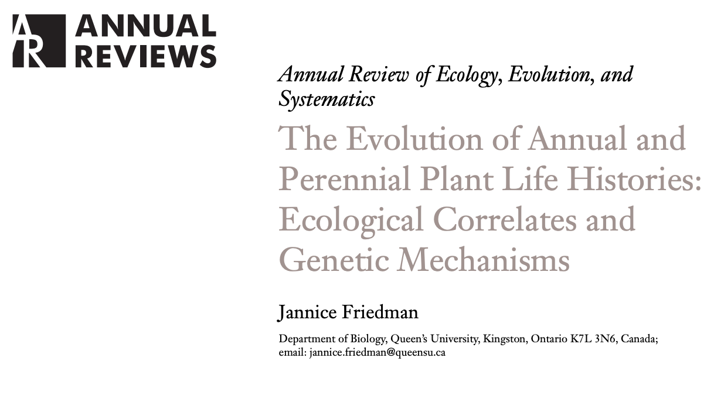
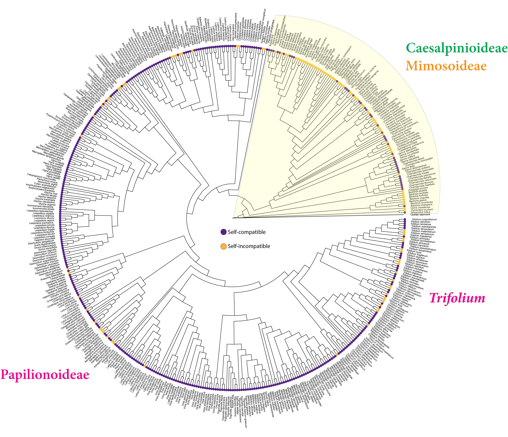

class: right, middle, title-slide, bg_mimosa <h2>the phylogenetic distribution and frequency of self-incompatibility in the legumes</h2> <h3>Lucy Delaney and Boris Igiƒá</h3> .small[ .left-align[ .contact[ .webpage[<i class="far fa-address-card" style="color: #064200;"></i> <a href="https://ledelaney.org" target="_blank">@ledelaney.org</a><br>] <i class="fa fa-github" style="color: #064200"></i> <a href="https://github.com/ledelaney" target="_blank">@ledelaney</a><br> <i class="fa fa-twitter" style="color: #064200"></i> <a href="https://twitter.com/emergentlyLucy" target="_blank">@emergentlyLucy</a>]]] .pull-bottom[ .small[ BOTANY • July 2021]] --- class: top, left, bg_wisteria -- .pull-left[ <img style="border-radius: 50%;" src="css/images/pic/peas.jpg" width="90%"> <img style="border-radius: 50%;" src="css/images/pic/bean-crop.jpg" width="90%">] .footnote-left[ Caracuta, 2017] --- class: top, left, bg_wisteria .pull-left[ ] .footnote-up[ Sahagún, 1970] --- class: middle, left, bg_wisteria .pull-left[ <img src="css/images/pic/theilliad.jpg" width="45%">] --- class: top, center, bg_blank .footnote-left[Smith & Brown, 2018; Azani et al., 2017; Doyle 2012] -- .tree-left[ <img src="css/images/figs/trees/01-fab-phylo.png" width="50%">] --- class: top, center, bg_blank .tree-up[ ] .footnote-left[Smith & Brown, 2018; Azani et al., 2017; Lavin et al., 2005] --- class: top, center, bg_blank .tree-up[ <img src="css/images/figs/trees/03-fab-phylo.png" width="51.8%">] .footnote-left[Smith & Brown, 2018; Azani et al., 2017; Lavin et al., 2005] --- class: top, center, bg_blank .tree-up[ <img src="css/images/figs/trees/04-fab-phylo.png" width="51.8%">] .footnote-left[Smith & Brown, 2018; Azani et al., 2017; Lavin et al., 2005] --- class: middle, right, bg_ceratonia <h2>“to create is to recombine”</h2> <h3>Jacob, 1977</h3> .footnote-left[Charlesworth, 2006; Silva & Goring, 2001] -- <br> <br> .bitlarger[üåª üå∏ üå∫ üåº üå∑] --- class: top, right, bg_tamarind -- <br> <br> <br> <img src="css/images/figs/01-plant-sex.png" width="20%"> .footnote-left[ Silva & Goring, 2001] --- class: top, right, bg_tamarind <br> <br> <img src="css/images/figs/01-plant-sex.png" width="20%"> <img src="css/images/figs/02-plant-sex.png" width="20%"> .footnote-left[ Silva & Goring, 2001] --- class: top, right, bg_tamarind <br> <br> <img src="css/images/figs/01-plant-sex.png" width="20%"> <img src="css/images/figs/02-plant-sex.png" width="20%"> <img src="css/images/figs/03-plant-sex.png" width="15%"> .footnote-left[ Silva & Goring, 2001] --- class: middle, center, bg_blank <br> .footnote-left[ Chase, 2016] --- class: middle, center, bg_blank <br> .footnote-left[ Chase, 2016] --- class: middle, center, bg_blank <br> <img src="css/images/figs/trees/13-mechanism.png" width="95%"> .footnote-left[ Chase, 2016; Igiƒá & Kohn, 2001; Steinbachs & Holsinger, 2002; Ramanauskas & Igiƒá, 2017; Liang et al., 2020] --- class: middle, center, bg_blank <br> .footnote-left[ Chase, 2016; Igiƒá & Kohn, 2001; Steinbachs & Holsinger, 2002; Ramanauskas & Igiƒá, 2017; Liang et al., 2020] --- class: middle, center, bg_blank <br> <img src="css/images/figs/trees/15-mechanism.png" width="95%"> .footnote-left[ Chase, 2016; Igiƒá & Kohn, 2001; Steinbachs & Holsinger, 2002; Ramanauskas & Igiƒá, 2017; Liang et al., 2020] --- class: top, right, bg_pea -- <br> <br> gametophytic <i class="far fa-check-circle fa-lg"></i> .footnote-left[ deNettancourt, 2001] --- class: top, right, bg_pea <br> <br> gametophytic <i class="far fa-check-circle fa-lg"></i> wet styles <i class="far fa-check-circle fa-lg"></i> .footnote-left[ deNettancourt, 2001; Heslop-Harrison, 1977] --- class: top, right, bg_pea <br> <br> gametophytic <i class="far fa-check-circle fa-lg"></i> wet styles <i class="far fa-check-circle fa-lg"></i> binucleate pollen <i class="far fa-check-circle fa-lg"></i> .footnote-left[ deNettancourt, 2001; Heslop-Harrison, 1977; Brewbaker, 1967] --- class: top, right, bg_pea <br> <br> gametophytic <i class="far fa-check-circle fa-lg"></i> wet styles <i class="far fa-check-circle fa-lg"></i> binucleate pollen <i class="far fa-check-circle fa-lg"></i> RSI in closely-related Rosaceae <i class="far fa-check-circle fa-lg"></i> .footnote-left[ deNettancourt, 2001; Heslop-Harrison, 1977; Brewbaker, 1967; Vieira, 2021] --- class: middle, left, bg_clitoria -- site of pollen tube arrest <i class="far fa-arrow-alt-circle-right fa-lg"></i> .footnote-right[ deNettancourt, 2001] --- class: middle, left, bg_clitoria site of pollen tube arrest <i class="far fa-arrow-alt-circle-right fa-lg"></i> detailed crossing experiments <i class="far fa-arrow-alt-circle-right fa-lg"></i> .footnote-right[ deNettancourt, 2001] --- class: middle, left, bg_clitoria site of pollen tube arrest <i class="far fa-arrow-alt-circle-right fa-lg"></i> detailed crossing experiments <i class="far fa-arrow-alt-circle-right fa-lg"></i> identification of S-locus .footnote-right[ deNettancourt, 2001; Franklin-Tong & Franklin-Tong, 2003] --- class: middle, left, bg_colutea -- .pull-left[ <math xmlns="http://www.w3.org/1998/Math/MathML" display="block"> <mi>ISI</mi> <mo>=</mo> </math>] .footnote-right[ Lloyd, 1968] --- class: middle, left, bg_colutea .pull-left[ <math xmlns="http://www.w3.org/1998/Math/MathML" display="block"> <mi>ISI</mi> <mo>=</mo> </math> <math xmlns="http://www.w3.org/1998/Math/MathML" display="block"> <mrow> <mo>1</mo> <mi>−</mi> <mfrac> <mrow> <mo>relative selfed success</mo> </mrow> <mrow> <mi>relative outcross success</mi> </mrow> </mfrac> </mrow> </math>] .footnote-right[ Lloyd, 1968] --- class: middle, left, bg_colutea .pull-left[ <math xmlns="http://www.w3.org/1998/Math/MathML" display="block"> <mi>ISI</mi> <mo>=</mo> </math> <math xmlns="http://www.w3.org/1998/Math/MathML" display="block"> <mrow> <mo>1</mo> <mi>−</mi> <mfrac> <mrow> <mo>relative selfed success</mo> </mrow> <mrow> <mi>relative outcross success</mi> </mrow> </mfrac> </mrow> </math> <br> <br> bimodal distribution <i class="far fa-arrow-alt-circle-right fa-lg"></i>] .footnote-right[ Lloyd, 1968; Lande & Schemske, 1985; Raduski et al., 2012; Grossenbacher et al., 2017] --- class: middle, left, bg_colutea .pull-left[ <math xmlns="http://www.w3.org/1998/Math/MathML" display="block"> <mi>ISI</mi> <mo>=</mo> </math> <math xmlns="http://www.w3.org/1998/Math/MathML" display="block"> <mrow> <mo>1</mo> <mi>−</mi> <mfrac> <mrow> <mo>relative selfed success</mo> </mrow> <mrow> <mi>relative outcross success</mi> </mrow> </mfrac> </mrow> </math> <br> <br> bimodal distribution <i class="far fa-arrow-alt-circle-right fa-lg"></i> ] .footnote-right[ Lloyd, 1968; Lande & Schemske, 1985; Raduski et al., 2012; Grossenbacher et al., 2017] --- class: middle, left, bg_dolichos -- --- class: middle, left, bg_dolichos <br> --  <br> -- --- class: middle, left, bg_dolichos -- --- class: middle, left, bg_dolichos --- class: middle, left, bg_dolichos --- class: middle, left, bg_dolichos --- class: middle, left, bg_dolichos --- class: middle, left, bg_dolichos --- class: middle, left, bg_dolichos --- class: top, center, bg_blank -- .footnote-left[ Smith & Brown, 2018] --- class: top, center, bg_blank <img src="css/images/figs/trees/21-species-level-BStre.png" width="70%"> .footnote-lil-up[ Smith & Brown, 2018] --- class: top, center, bg_blank  .footnote-lil-up[ Smith & Brown, 2018] --- class: middle, center, bg_blank --- class: middle, center, bg_blank --- class: middle, center, bg_blank --- class: middle, center, bg_blank <img src="css/images/figs/43-summary.png" width="85%" style="border-radius: 5%;"> --- class: middle, center, bg_blank --- class: top, left, bg_peanut --- class: top, left, bg_peanut --- class: middle, left, bg_locust -- <table> <tr> <th></th> <th></th> </tr> <tr> <td>Dobrofsky & Grant, 1980</td> <td><i>Lotus corniculatus</i></td> </tr> <tr> <td>Lundqvist, 1993</td> <td><i>Lotus tenuis</i></td> </tr> <tr> <td>Sandal, 1951</td> <td><i>Melilotus officianalis</i></td> </tr> <tr> <td>Williams, 1951</td> <td><i>Trifolium hybridum</i></td> </tr> <tr> <td>Brewbaker, 1955</td> <td><i>Trifolium negrescens</i></td> </tr> <tr> <td>Atwood, 1941</td> <td><i>Trifolium repens</i></td> </tr> <tr> <td>Casey et al., 2010</td> <td><i>Trifolium repens</i></td> </tr> </table> --- class: middle, center, bg_locust --- class: middle, center, bg_locust --- class: middle, right, bg_trifoliumprat -- .bitlarger[ü层åõ] <i class="far fa-arrow-alt-circle-left fa-lg"></i> --- class: middle, right, bg_trifoliumprat .bitlarger[ü层åõ ü层è≥] <i class="far fa-arrow-alt-circle-left fa-lg"></i> --- class: middle, right, bg_trifoliumprat .bitlarger[ü层åõ ü层è≥ üå≥‚è≥] <i class="far fa-arrow-alt-circle-left fa-lg"></i> --- class: middle, right, bg_trifoliumprat .bitlarger[ü层åõ ü层è≥ üå≥‚è≥] <i class="far fa-arrow-alt-circle-left fa-lg"></i> .bitlarger[üߨ üߨüߨ] <i class="far fa-arrow-alt-circle-left fa-lg"></i> --- class: middle, right, bg_trifoliumprat stem composition + longevity* <i class="far fa-check-circle fa-lg"></i> <br> <br> .pull-right[ $${R^{2}_{pred}} = 0.835, \mbox{*}\ p < 1e − 06$$] .footnote-left[ Ives, 2019] --- class: middle, right, bg_trifoliumprat stem composition + longevity* <i class="far fa-check-circle fa-lg"></i> ploidy <i class="far fa-times-circle fa-lg"></i> <br> <br> .pull-right[ $${R^{2}_{pred}} = 0.835, \mbox{*}\ p < 1e − 06$$] .footnote-left[ Ives, 2019] --- class: middle, right, bg_carob low coverage <i class="fas fa-angle-double-left fa-lg"></i> --- class: middle, right, bg_carob low coverage <i class="fas fa-angle-double-left fa-lg"></i> unclear if traits homologous <i class="fas fa-angle-double-left fa-lg"></i> --- class: middle, right, bg_carob low coverage <i class="fas fa-angle-double-left fa-lg"></i> unclear if traits homologous <i class="fas fa-angle-double-left fa-lg"></i> low evidence of a RSI operating <i class="fas fa-angle-double-left fa-lg"></i> .footnote-left[Aguiar et al., 2015] --- class: middle, right, bg_carob low coverage <i class="fas fa-angle-double-left fa-lg"></i> unclear if traits homologous <i class="fas fa-angle-double-left fa-lg"></i> low evidence of RSI operating <i class="fas fa-angle-double-left fa-lg"></i> low evidence of a single SI system operating <i class="fas fa-angle-double-left fa-lg"></i> .footnote-left[Aguiar et al., 2015] --- class: middle, right, bg_carob low coverage <i class="fas fa-angle-double-left fa-lg"></i> unclear if traits homologous <i class="fas fa-angle-double-left fa-lg"></i> low evidence of RSI operating <i class="fas fa-angle-double-left fa-lg"></i> low evidence of a single SI system operating <i class="fas fa-angle-double-left fa-lg"></i> <br> <br> .bitlarger[.red[Thank you!] <a href="https://github.com/ledelaney/07-21-Botany"> @ledelaney</a>] .footnote-left[Aguiar et al., 2015]